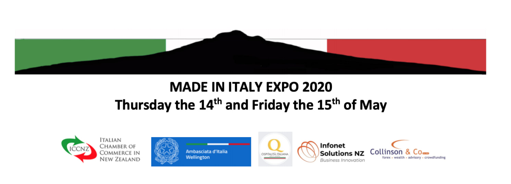

|
Edizione di febbraio 2020 di Destinazione Nuova Zelanda, la guida per i nuovi arrivati in NZ in formato PDF, curata dall'Ambasciata d'Italia a Wellington.
Link al PDF Riportiamo questa notizia pubblicata ieri, 25 febbraio 2020, sul sito dell'Ambasciata d"Italia a Wellington:
Si comunica che in data 24 febbraio il Ministero della Salute di Samoa ha stabilito che i viaggiatori provenienti (o in transito) dall'Italia saranno ammessi nel Paese solo se abbiano trascorso 14 giorni di quarantena in un Paese in cui non siano occorsi casi di coronavirus e posseggano certificazione medica (non piu' vecchia di 3 giorni)che escluda il contagio. Tale misure si applicano anche ai viaggiatori provenienti (o in transito) da Cina, Hong Kong, Macao, Giappone, Singapore, Tailandia e Corea del Sud. La certificazione medica (ma non la quarantena di 14 giorni) e' inoltre richiesta per viaggiatori provenienti (o in transito) da: Taiwan, Malesia, Australia, Vietnam, EAU, California (Stati Uniti), Francia, Germania, Canada, Iran. Le Autorita' di Samoa hanno anche deciso che ogni viaggiatore in arrivo nel Paese sara' sottoposto a screening sanitari obbligatori. E' infine fatto divieto alle navi di crociera lo sbarco nel Paese. Source: https://ambwellington.esteri.it/ambasciata_wellington/it/ambasciata/news/dall_ambasciata/2020/02/samoa-restrizioni-all-ingresso.html The Origini Italia Program in Export Management and Entrepreneurial Development is aimed at descendants of Italian emigrants around the world.
Besides teaching business management skills and entrepreneurial attitudes, Origini Italia offers participants the opportunity to establish professional and cultural ties with their land of origin. The Program is organized by MIB Trieste School of Management, in cooperation with ITA (Italian Trade Agency), with the local Administration of Friuli Venezia Giulia Region and with other Italian regional organizations. Thanks to the financial support of partner bodies and institutions, participation in the programme is completely free of tuition charges. Also included:
Application deadline: January 31, 2020 - April 30, 2020 The program starts: October 26, 2020 Click here to find out more Dal Comunicato stampa del Consiglio dei Ministri n. 31 del 23 Febbraio 2020 Il Consiglio dei Ministri si è riunito sabato 22 febbraio 2020, alle ore 19.02, presso la sede del Dipartimento della protezione civile, sotto la presidenza del Presidente Giuseppe Conte. Segretario il Sottosegretario alla Presidenza Riccardo Fraccaro. Cliccare qui per leggere l'articolo. Per gli italiani che viaggiano:
Lombardia e Veneto le regioni più colpite, scuole, chiese e molte attività chiuse in alcuni centri, dove possono esserci anche imposizioni di viaggio, quindi consigliamo a chi desidera viaggiare in Italia, o partire dall'Italia per l'estero, di tenersi informato su possibili restrizioni e sviluppi della situazione. Maeci: Seconda Edizione di 'Vivo d'arte', concorso per giovani artisti italiani all'estero18/2/2020
Al via la seconda edizione di “Vivo d’Arte”, il concorso-premio dedicato ai giovani artisti italiani (al di sotto dei 36 anni di età) residenti stabilmente all’estero. Il successo della prima edizione ha confermato l’iniziativa come eccellente strumento per valorizzare la creatività e il talento dei nostri giovani connazionali residenti all’estero e per favorire collaborazioni e contaminazioni con altre culture.
Anche quest’anno il concorso-premio si articolerà in due distinte sezioni, una dedicata alle Arti Performative, l’altra alle Arti Visive, in collaborazione rispettivamente con la Fondazione Romaeuropa e con il Museo d'Arte Moderna di Bologna e con la partecipazione del MiBACT. Come per la prima edizione, il progetto vincitore della sezione Arti Visive sarà rappresentato a Roma, il 21 ottobre 2020, nell’ambito della prossima edizione del Romaeuropa Festival. Al bando della sezione Arti performative, seguirà nei prossimi mesi il lancio di “Vivo d’Arte - Arti visive”, che offrirà al vincitore l’opportunità di svolgere una residenza artistica presso il prestigioso Museo d’Arte Moderna di Bologna (MAMBO). Arti performative Online il bando per la seconda edizione del Premio Vivo d’Arte – Arti performative, per le discipline del teatro, della musica e della danza contemporanee, riservato a giovani artisti di nazionalità italiana residenti stabilmente all’estero da almeno un anno. La scadenza per la ricezione delle domande è fissata alle ore 23.59 (ora italiana) del giorno 31 marzo 2020. Scarica il bando Source: Ministero degli Affari Esteri e della Cooperazione Internazionale https://www.esteri.it/mae/en/servizi/italiani-all-estero/vivo-d-arte-concorso-per-giovani/edizione-2020.html?fbclid=IwAR0vvHbeIDDCpuBSXjnygNgqmddH-rmBo3VMfh7oLLCVGqf8Jz8cuvK7oV4  Siete arrivati di recente in Nuova Zelanda? Avete bisogno di informazioni di natura generale sul Paese e sui servizi consolari? Volete sapere di piu' sulle vostre opzioni di visto?
Non perdete l’opportunita’ di partecipare ai Seminari informativi per i Nuovi Arrivati che l’Ambasciata organizza il prossimo 2 e 3 marzo, rispettivamente a Wellington e Auckland. Nel corso dei Seminari verra’ presentata la Nuova Guida dell’Ambasciata per i Nuovi Arrivati, mentre l’Immigration Advisor Elena Bollino (Apollo Immigration) vi dara’ indicazioni in materia di visti neozelandesi. All’incontro di Wellington partecipera’ anche un rappresentante del NZ Labour Inspectorate che fornira’ indicazioni in materia di diritti per I lavoratori migranti. La partecipazione ai Seminari e’ libera. Per ragioni organizzative vi preghiamo di registrarvi. Click here per il seminario a Wellington Click here Per il seminario a Auckland

(Il post che segue, adattato da un articolo postato sul gruppo LinkedIn Professionisti italiani in Nuova Zelanda, è in lingua inglese, ma il link al modulo di partecipazione https://lnkd.in/g4MzSEP è sia in inglese che in italiano. n.d.r.)
The Italian Chamber of Commerce in New Zealand Inc., in partnership with the Embassy of Italy in Wellington, is pleased to invite companies connected with Italy to exhibit at the ITALIAN EXPO 2020. This event will take place on the 14th and 15th of May 2020 at the spectacular exhibition facility “The Cloud” located in Auckland waterfront. Follow the links below to download the invitation letter and registration form: please complete and return the registration form to info@iccnz.com Invitation letter - https://lnkd.in/gWgAJbn Registration form - https://lnkd.in/g4MzSEP Note that the members of the ICCNZ will have access to a special discount and that the non ICCNZ members will have to pay the full amount, but they will get a free yearly membership which, including the presence on the website and the participation to other activities, will grant the company with a follow up to the Expo. Should you have any questions please do not hesitate to contact info@iccnz.com Verbale breve della riunione del 2 febbraio 2020 e bollettino per gli italiani in Nuova Zelanda11/2/2020
If you like to read this in English (or other languages) click here and then click the "translate" button, top right. Cari Connazionali, Vi inoltriamo la versione breve del verbale della riunione tenutasi il 2 febbraio ad Auckland. Come sempre potrete trovare la versione integrale del verbale sul nostro sito o cliccando qui. Buona lettura, Sandro Aduso Wilma Giordano Laryn Presidente uscente Presidente entrante Verbale breve della riunione di domenica 2 febbraio 2020 e dell’AGM 2019/20 del Comites Wellington Incorporated Aperta ai cittadini italiani e neozelandesi di origine italiana Collegamento Skype con il Dr Nicola Comi, Capo Ufficio Consolare, Ambasciata Collegamento Skype con il Consigliere CGIE Prof Francesco Papandrea Amministrazione e varie Il comitato ha approvato unanimemente lo scioglimento della Società Incorporata (Comites Wellington Incorporated), non sussistendo più le ragioni per mantenerla. Le elezioni dei Comites sono state rimandate al 2021. Disappunto per la mancata consultazione o informazione a priori ai componenti del Comites. Al momento i membri hanno dato la loro disponibilità a continuare a svolgere la propria funzione all'interno del Comites Wellington. Il Presidente Sandro Aduso, a causa di intensi impegni di lavoro, ha presentato le proprie dimissioni dalla carica. Il Comites ha accettato le dimissioni, ed ha eletto alla presidenza l’attuale Vicepresidente, Wilma Giordano Laryn. Ha poi eletto Aduso alla carica di Vicepresidente. I membri del Comites hanno tenuto a sottolineare la fondamentale attività svolta dal Presidente uscente nell’avviare il primo Comites della Nuova Zelanda. Il Comites ha espresso parere favorevole a che la riunione della commissione Continentale Anglofona Paesi Extraeuropei del CGIE si svolga ad Auckland dal 1 al 3 maggio. Il Comites, a seguito delle dimissioni dell’Assistente Amministrativa Alessandra di Marco, ha approvato di affidare alla Dr.ssa Paola Mastria, commercialista residente a Christchurch, l’incarico di curare i bilanci Comites. Aggiornamento Progetto Accordo su Pensioni e Sicurezza Sociale Il Comites ha approvato il “position paper” preparato dal consulente Comites Dr Carlo Tondelli (in collegamento telematico), commentando positivamente la chiarezza della presentazione e il dettaglio delle problematiche legate ai diversi sistemi pensionistici e alle leggi che regolano la corresponsione di pensioni maturate nei due paesi. Aggiornamento Progetto WHV Ci è stata inoltrata dal Sen Giacobbe una lettera del Ministro di Maio del 29/11/2019, in cui, in risposta a sollecitazione presentata dal Senatore in appoggio alla nostra proposta di modifica, informa che un nuovo testoconforme alle nostre richieste è stato inoltrato alla controparte neozelandese. Prevedendo l’estensione fino a 12 mesi del periodo di lavoro presso un unico datore, il nuovo Accordo necessiterà di un’autorizzazione alla ratifica da parte del Parlamento italiano. Varie ed eventuali È stata fissata al 29 marzo 2020 la data del referendum confermativo previsto dall'articolo 138 della Costituzione sul testo di legge costituzionale recante: "Modifiche agli articoli 56, 57 e 59 della Costituzione in materia di riduzione del numero dei parlamentari". Gli elettori iscritti sull’elenco fornito dal Ministero dell’Interno riceveranno dall’Ambasciata il plico elettorale per posta. Bollettino per gli italiani in Nuova Zelanda Referendum 2020: Informazioni per elettori temporaneamente in Nuova Zelanda (non iscritti AIRE) Gli elettori italiani che per motivi di lavoro, studio o cure mediche si trovino temporaneamente all’estero, per un periodo di almeno tre mesi, nel quale ricade la data di svolgimento del referendum popolare confermativo (29 marzo 2020) della legge costituzionale in materia di riduzione del numero dei parlamentari, nonché i familiari con loro conviventi, potranno esercitare il diritto di voto per corrispondenza (art. 4-bis, comma 1, legge 459 del 27 dicembre 2001), ricevendo il plico elettorale contenente la scheda per il voto all’indirizzo di temporanea dimora all’estero. Per esercitare il proprio diritto di voto per corrispondenza, tali elettori dovranno far pervenire AL COMUNE d’iscrizione nelle liste elettorali un’apposita opzione entro il 26 febbraio 2020. Cliccare qui per maggiori informazioni. Canti di Consolazione: quattro concerti in Nuova Zelanda L'ambasciata annuncia quattro concerti con Tessa Romano (mezzo-soprano), Luca Manghi (flauto), e Dylan Lardelli (Chitarra). Musica di: Monteverdi, Mortari, Berio, Castelnuovo-Tedesco, Dylan Lardelli, e Chris Gendall. Date e città: 8 marzo, Christchurch 15 marzo, Auckland 21 marzo, Wellington 22 Marzo, Dunedin Raffaello Sanzio - 500esimo anniversario L'Ambasciata di Wellington, in collaborazione con l'Università di Auckland, ha organizzato una conferenza su Raffaello Sanzio con Costantino D'Orazio. Cliccare qui per maggiori informazioni. |
Fai clic qui per modificare.
Archivi
Giugno 2022
Categorie
Tutto
|
 Feed RSS
Feed RSS
Copyright © 2022